margheRita.RmdUntargeted metabolomics studies by mass spectrometry technologies generate huge numbers of metabolite signals, requiring computational analyses for post-acquisition processing and dedicated databases for metabolite identification. Web-based data processing solutions frequently include only a part of the entire workflow thus implying the use of different platforms. The R package margheRita addresses the complete workflow for metabolomic profiling in untargeted studies based on liquid chromatography (LC) coupled with tandem mass spectrometry (MS/MS). This pipeline is specially advantageous in the case of data-independent acquisition (DIA), where all MS/MS spectra are acquired with high resolution. Interestingly, the R package margheRita enhances fragment matching accuracy by providing an original metabolite spectral library acquired in both polarities using different chromatographic columns.
The package provides:
Source code: https://github.com/emosca-cnr/margheRita
Citation: Ettore Mosca, Marynka Ulaszewska, Zahrasadat Alavikakhki, Edoardo Niccolò Bellini, Valeria Mannella, Gianfranco Frigerio, Denise Drago, Annapaola Andolfo. MargheRita: an R package for LC-MS/MS SWATH metabolomics data analysis and confident metabolite identification based on a spectral library of reference standards. bioRxiv 2024.06.20.599545; doi: https://doi.org/10.1101/2024.06.20.599545
Contacts:
The package requires a series of other R packages, which are available in CRAN, Bioconductor or github, namely:
## Biobase, ComplexHeatmap, LSD, car, circlize, clusterProfiler, devtools, grDevices, graphics, openxlsx, pals, pcaMethods, stats, stringr, utilsIn most of the cases, the following instructions guarantee that all such dependencies are installed:
install.packages("devtools")
if (!require("BiocManager", quietly = TRUE)){
install.packages("BiocManager")
}
BiocManager::install(c("Biobase", "ComplexHeatmap", "clusterProfiler", "pcaMethods"))
devtools::install_github("emosca-cnr/margheRita", dependencies = T)The functions as.metaboset() and
as.PomaSummarizedExperiment() enable margheRita data
structure export in formats that are compatible with, respectively,
packages notame and
POMA.
If interested in these functions the user must install such
packages:
BiocManager::install("POMA")
devtools::install_github("antonvsdata/notame")margheRita is intended to be used after having done a number of data acquisition steps through MS-Dial (Tsugawa et al. 2015). It requires two text files in tab-delimited format:
A couple of remarks:
short sample ids yield better figures;
the collapse of technical replicates (see below) takes place over all samples that share the same concatenation of “class” and “biological_rep” values.
The function read_input_file() read the two files and
creates the “mRList” object, which is used by most of the margheRita
functions as main input/output:
mL <- read_input_file(feature_file = "MS-Dial_file.txt", sample_file = "sample_info.txt")Please, also consider that, to properly split QC samples, you must indicate exactly “QC” as class of a sample in the sample_file.
The initial mRList object contains the following elements:
| Element of mRList | Description |
|---|---|
| data | matrix containing metabolite abundances |
| metab_ann | metabolite annotation |
| sample_ann | sample annotation |
| QC | matrix containing metabolite abundances of QC samples |
| QC_ann | annotation of QC samples |
## DD_mealC_t7_1 MM_mealB_t0_1 AA_mealA_t0_1
## F507 462.1838 466.3308 810.1950
## F515 52686.7100 79673.6700 24777.8200
## F848 919.8575 1276.5430 480.5994
## F888 2098.4130 2152.0100 2329.6450
## F1016 12598.9400 3880.9030 4511.1170
## F1076 305.0213 116.4260 184.2786## Feature_ID MSDialName
## F507 F507 Unknown
## F515 F515 Trimethylamine??N-oxide
## F848 F848 Unknown
## F888 F888 Unknown
## F1016 F1016 w/o MS2:3-Hydroxypyridine; CE0; GRFNBEZIAWKNCO-UHFFFAOYSA-N
## F1076 F1076 Unknown
## MSDialSMILES Ontology rt
## F507 null null 0.868
## F515 O=N(C)(C)C Trialkyl amine oxides 0.855
## F848 null null 1.630
## F888 null null 1.435
## F1016 c1cc(cnc1)O Hydroxypyridines 1.324
## F1076 null null 1.384## id injection_order batch class technical_rep
## DD_mealC_t7_1 DD_mealC_t7_1 14 1 DD 1
## MM_mealB_t0_1 MM_mealB_t0_1 15 1 MM 1
## AA_mealA_t0_1 AA_mealA_t0_1 16 1 AA 1
## AA_mealC_t1_1 AA_mealC_t1_1 17 1 AA 1
## DD_mealA_t6_1 DD_mealA_t6_1 18 1 DD 1
## MM_mealC_t8_1 MM_mealC_t8_1 19 1 MM 1
## biological_rep subj_meal_time meal time subj_meal
## DD_mealC_t7_1 mealC_t07 DD_mealC_t07 mealC t07 DD_mealC
## MM_mealB_t0_1 mealB_t00 MM_mealB_t00 mealB t00 MM_mealB
## AA_mealA_t0_1 mealA_t00 AA_mealA_t00 mealA t00 AA_mealA
## AA_mealC_t1_1 mealC_t01 AA_mealC_t01 mealC t01 AA_mealC
## DD_mealA_t6_1 mealA_t06 DD_mealA_t06 mealA t06 DD_mealA
## MM_mealC_t8_1 mealC_t08 MM_mealC_t08 mealC t08 MM_mealC## QC16 QC19 QC32
## F507 357.4786 812.2931 158.57320
## F515 28499.6900 63226.5000 25997.21000
## F848 429.7289 384.7868 197.77240
## F888 1403.3610 1588.5870 758.74820
## F1016 2369.6350 3496.3000 1908.29200
## F1076 101.8414 322.3278 21.41965## id injection_order batch class technical_rep biological_rep
## QC16 QC16 84 1 QC 16 QC
## QC19 QC19 107 1 QC 19 QC
## QC32 QC32 180 1 QC 32 QC
## QC34 QC34 192 1 QC 34 QC
## QC35 QC35 203 2 QC 35 QC
## QC37 QC37 214 2 QC 37 QC
## subj_meal_time meal time subj_meal
## QC16 QC_QC QC QC QC_QC
## QC19 QC_QC QC QC QC_QC
## QC32 QC_QC QC QC QC_QC
## QC34 QC_QC QC QC QC_QC
## QC35 QC_QC QC QC QC_QC
## QC37 QC_QC QC QC QC_QCThe full version of the “Urine” dataset, which was used for margheRita assessment and to generate this documentation, is available at https://doi.org/10.5281/zenodo.11243781, files “Urine_RP_NEG_norm.txt” and “Urine_RP_POS_norm.txt”. The corresponding sample information files can be accessed as follows:
sample_file_NEG <- system.file("extdata", "Urine_RP_NEG_norm_metadata.txt", package = "margheRita")
sample_file_POS <- system.file("extdata", "Urine_RP_POS_norm_metadata.txt", package = "margheRita")To support interoperability with other packages with a focus on metabolomics, the margheRitaList can be reorganized as a “MetaboSet” object, used by package “notame” (Klåvus et al. 2020) (see above the installation instruction to enable this opportunity):
ms <- as.metaboset(mRList)## MetaboSet object with 232 features and 253 samples.
## 10 QC samples included
## 232 non-flagged features, 0 flagged features.
##
## class:
## DD: 81, MM: 81, AA: 81, QC: 10
##
## The object has the following parts (splits):
## FALSE: featuresor as “PomaSummarizedExperiment” object, used by package “POMA” (Castellano-Escuder et al. 2021):
se <- as.PomaSummarizedExperiment(mRList)## class: SummarizedExperiment
## dim: 232 253
## metadata(0):
## assays(1): ''
## rownames(232): F1016 F1279 ... F42379 F42584
## rowData names(0):
## colnames(253): DD_mealC_t7_1 MM_mealB_t0_1 ... QC47 QC51
## colData names(10): class biological_rep ... injection_order
## technical_repThe function filtering() runs filters
to exclude features/sample with many missing values, features with wrong
m/z values and, lastly, performs imputation of missing values:
mL <- filtering(mL)
# Samples with >= 100 metabolites 243 / 243
# Features occurring in >= 3 samples 604 / 604
# Features with appropriate m/z values: 548
# Features without appropriate m/z values: 56
No NAs: imputation not performed.These three steps can be called independently through the function
filter_NA(), m_z_filtering() and
imputation(), respectively. In particular,
m_z_filtering() remove features with m/z that have decimal
value within [4, 8] (by default), while the imputation is performed
replacing NA values with a random number, calculated between 10%-25% of
the minimum value of the feature.
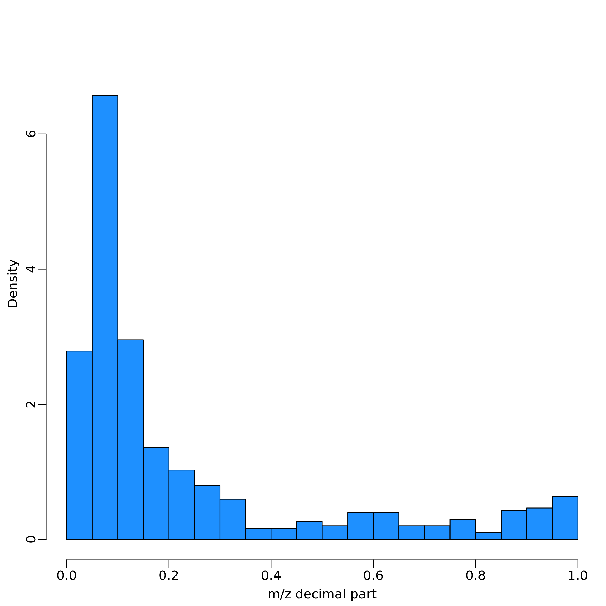
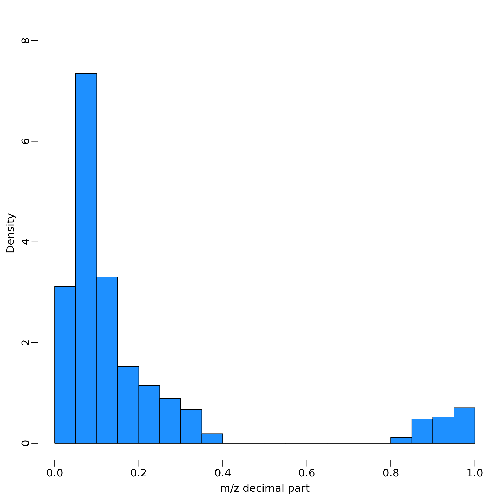
The function heatscatter_chromatography() creates a
graphic overview of the mz and rt values in the dataset:
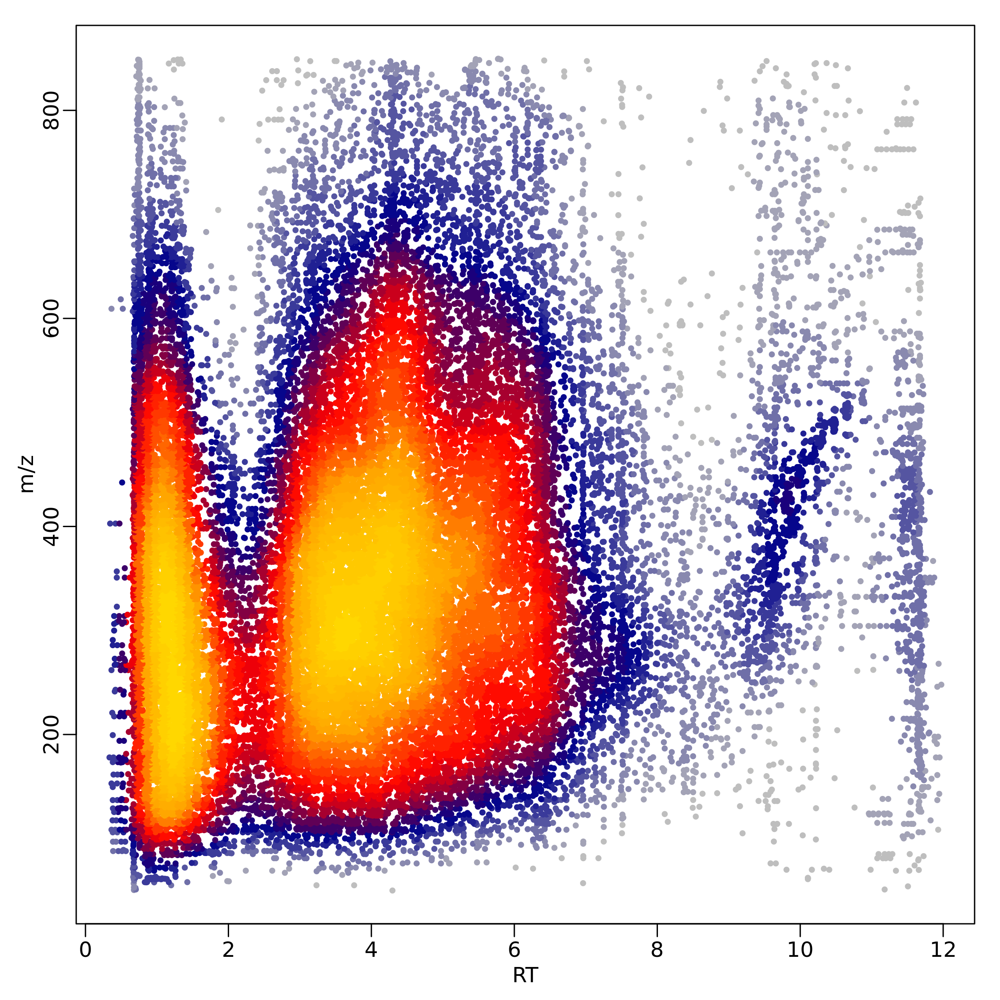
margheRita provides three ways for normalizing metabolite profiles:
For “reference” and “pqn” methods, the column reference
must be present in mRList$metab_ann. If missing, the
function calc_reference() sets up such column using average
metabolite values and medians of QC samples. For example, here’s a call
to normalize_profiles() using pqn:
mL_norm <- normalize_profiles(mL, method = "pqn")
PQN normalization
No reference profile found, using calc_reference() function...
Using QC...The comparison of the coefficient of variation of a metabolite in relation to QC samples provides a means to exclude low quality features. In particular, only features that have a CV ratio between no-QC samples and QC sample higher than a given threshold (by default 1) are kept:
mL_norm <- CV_ratio(mRList = mL_norm)
Summary of CV ratio (samples / QC):
Min. 1st Qu. Median Mean 3rd Qu. Max.
0.3593 0.8025 1.1032 1.4645 1.6516 13.4896
# Metabolites with appropriate CV 303 / 539 The distributions of metabolite relative log-abundances can be calculated and visualized by means of:
mL <- RLA(mRList = mL)Typically, after normalization, the various samples should have similar distributions of relative log-abundance, a powerful tool to visualize unwanted variation in high-dimensional data (Gandolfo 2018).
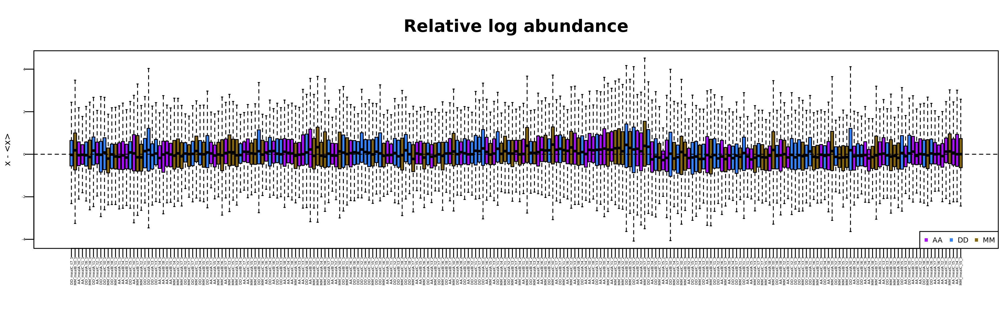
margheRita performs Principal Component Analysis (PCA) using the
function mR_pca(), which relies on the package pca_methods
(Stacklies et al.
2007). Besides choosing the scaling method (argument
scaling) and number of PCs (nPcS), it allows
to include/exclude quality control samples by means of argument
include_QC:
mL_norm <- mR_pca(mRList = mL_norm, nPcs=5, scaling="uv", include_QC=FALSE)The results are added to the mRList in the element pca.
It also provides some plots, like the visualization of distribution of
loadings for all-pairs of the top 5 PCs. The plots are directly saved in
the current working directory (or in the sub directory created with the
argument dirout). The results of PCA can be plotted using
Plot2DPCA() function. The argument col_by
enables the choice of the mRList$sample_ann column to be
used to color samples:
Plot2DPCA(mRList = mL_norm, pcx=1, pcy=2, col_by="class", include_QC=TRUE)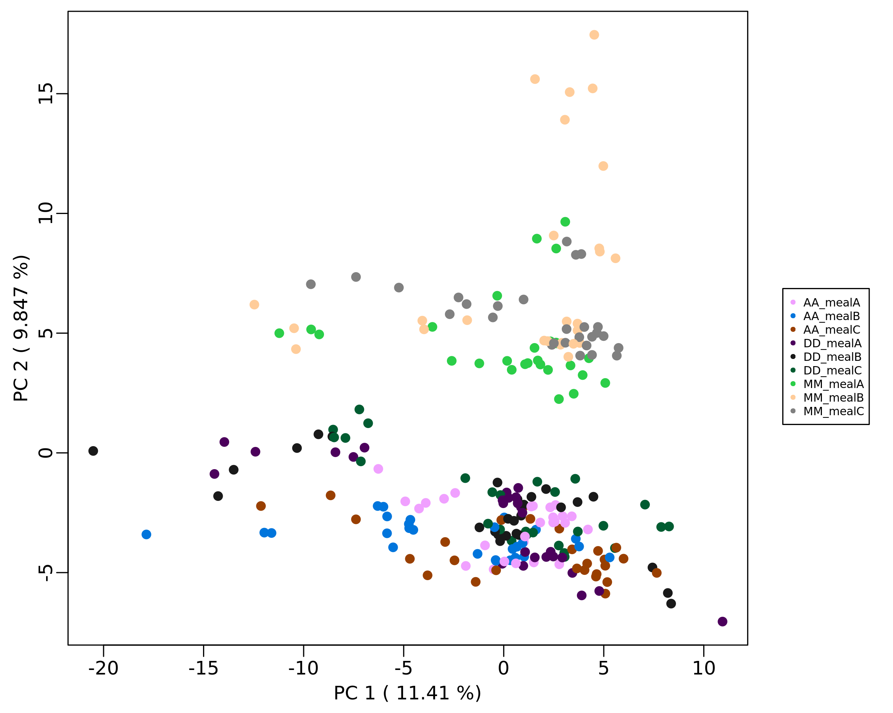
It is common that the inspection of the similarity among samples
(e.g. distribution over the top PCs, RLA) rises concerns about the
quality of some sample. The function remove_samples()
allows the user to remove one or more samples from the
mRList. Here, for example we remove all “Blank”
samples:
mL <- remove_samples(mRList = mL, ids = "Blank", column = "class")In this case, the function removes all samples with value “Blank” in the column “class” of sample annotation.
The definition of mean metabolite abundance for every biological
replicate is performed by means of collapse_tech_rep()
function:
mL_norm_bio <- collapse_tech_rep(mRList = mL_norm)## AA_mealA_t00 AA_mealA_t01 AA_mealA_t02 AA_mealA_t03 AA_mealA_t04
## F1016 3853.8803 3214.17931 4165.5549 2600.95623 2690.2612
## F1279 212.1867 83.91119 100.4874 80.67319 127.2016
## F1428 243.9314 473.38357 449.7928 256.22765 420.9511
## F1686 3185.0454 1903.93022 2353.6457 1303.02493 1248.5379
## F1768 4211.8944 7777.06654 4226.5099 3126.18720 4583.2071
## F1814 1001.8547 700.26362 686.1595 631.03315 819.4091## class_biorep class biological_rep
## AA_mealA_t00 AA_mealA_t00 AA mealA_t00
## AA_mealA_t01 AA_mealA_t01 AA mealA_t01
## AA_mealA_t02 AA_mealA_t02 AA mealA_t02
## AA_mealA_t03 AA_mealA_t03 AA mealA_t03
## AA_mealA_t04 AA_mealA_t04 AA mealA_t04
## AA_mealA_t05 AA_mealA_t05 AA mealA_t05MargheRita provides some functions to calculate mean and variability, fold changes and to test for metabolite variations.
The function mean_median_stdev_samples() calculates
mean, median and standard deviation of metabolite abundance according to
the sample classes specified in the column “class” of sample
annotation:
mean_median_stdev_samples(mL_norm_bio)
According to dataset size, this might take a few minutes.
Calculating means...
Calculating medians...
Calculating standard deviations...The function univariate() performs dataset-wide
statistical tests (Student t-tests, Wilcoxon test, Anova and
Kruskal-Wallis test) between levels of a particular factor defined in
the sample annotation:
mL_norm_bio <- univariate(mL_norm_bio, test_method="anova", exp.levels = c("AA", "DD", "MM"), exp.factor = "class")## F p q DD-AA MM-AA MM-DD
## F1016 18.0246447 3.673489e-07 2.185255e-06 0.02663059 0.003553051 1.816046e-07
## F1279 6.6090342 2.231185e-03 5.626465e-03 0.08027259 0.333008384 1.552118e-03
## F1428 4.2468914 1.775329e-02 3.295010e-02 0.97584136 0.047340701 2.798801e-02
## F1686 8.9176173 3.252418e-04 9.673858e-04 0.56144925 0.009112942 3.361932e-04
## F1768 0.6264307 5.371634e-01 6.020382e-01 0.54934394 0.663716847 9.818341e-01
## F1814 1.1137054 3.335041e-01 4.093807e-01 0.98299417 0.360666302 4.595648e-01The full results of the analysis are saved to the text file
We found it helpful to provide a function for retrieving the list of significant features:
significant_features <- select_sign_features(mL_norm_bio, test_method="anova", test_value = "q", cutoff_value = 0.05, feature_id = "Feature_ID")## [1] "F3957" "F30141" "F9507" "F2833" "F35354" "F3081"By default the function provides the Feature_ID. After having performed metabolite annotation, it is also possible to retrieve “Name” and “PubChemCID” (see below).
Metabolite identification in margheRita is performed by means of the
function metabolite_identification(), which requires an
mRList object and a reference library with MS and MS/MS metabolite
information. The identification is possible up to level-1, provided that
the required information are available in the reference library. The
identification is based on the quantification of the following
quantities:
Such quantities are used to score the similarity among precursors of features and metabolites, as well as their MS/MS peaks.
The function select_library() provides a means to select
any of two sources:
margheRita, which contains MS and MS/MS information for about 800 metabolites spanning several biological functions; these libraries provideup to level 1 identifications in positive and negative modalities for “HILIC”, “LipC8”, “pZIC”, “RPLong” and “RPShort” chromatographic columns, that are acquired following the methods reported in the supplementary material of Mosca et al. (2024).
MS-Dial, which covers a much larger set of metabolites (\(10^5\)), but is limited to level 2 identifications in positive and negative modalities.
In this example, we load the margheRita library in positive modality with retention times of RPShort columns and we discard all peaks with relative intensity less than 10:
mR_library <- select_library(column = "RPShort", mode = "POS", accept_RI=10)The resulting mR_library is a list that contains
metadata and MS information about precursors
## ID CAS Name rt mz PubChemCID
## L10 L10 485-80-3 S-(5'-Adenosyl)-L-methionine 0.80 399.14452 34756
## L14 L14 61-19-8 Adenosine monophosphate 1.40 348.07037 6083
## L17 L17 979-92-0 S-Adenosylhomocysteine 1.28 385.12887 439155
## L20 L20 56-86-0 L-Glutamic acid 0.90 148.06044 33032
## L30 L30 56-40-6 Glycine 0.85 76.03931 750
## L33 L33 56-41-7 L-Alanine 0.88 90.05496 5950
## SMILES
## L10 C[S+](CC[C@H](N)C(O)=O)C[C@H]1O[C@H]([C@H](O)[C@@H]1O)N1C=NC2=C1N=CN=C2N
## L14 NC1=NC=NC2=C1N=CN2[C@@H]1O[C@H](COP(O)(O)=O)[C@@H](O)[C@H]1O
## L17 N[C@@H](CCSC[C@H]1O[C@H]([C@H](O)[C@@H]1O)N1C=NC2=C(N)N=CN=C12)C(O)=O
## L20 N[C@@H](CCC(O)=O)C(O)=O
## L30 NCC(O)=O
## L33 C[C@H](N)C(O)=Oand MS/MS peaks
## $M1
## [,1] [,2]
## [1,] 45.03236 10.34602
## [2,] 70.02762 12.46120
## [3,] 96.00721 13.50730
## [4,] 99.04249 17.68019
## [5,] 113.03337 100.00000
## [6,] 117.05313 20.43913
##
## $M2
## [,1] [,2]
## [1,] 57.03256 11.18379
## [2,] 60.07970 58.46973
## [3,] 85.02673 100.00000
## [4,] 95.08432 12.06547
## [5,] 109.09995 11.77031
## [6,] 144.10080 38.14543
## [7,] 183.17293 27.40629
## [8,] 285.20408 26.57983
## [9,] 344.27686 33.27335
##
## $M3
## [,1] [,2]
## [1,] 55.01692 100.00000
## [2,] 56.04866 58.49046
## [3,] 70.06436 54.29821
## [4,] 98.05859 90.19182
## [5,] 116.06901 16.49188Once the library is selected, metabolite identification can be
performed by the homonymous function, where the argument
features specifies the features to be considered (all
features if it is left features=NULL, as in the following
example):
mL_norm_bio <- metabolite_identification(mL_norm_bio, library_list = mR_library)The function metabolite_identification() has a series of
parameters that can be adjusted to optimize the identification process
(see its documentation). When metabolite identification is applied on a
large number of features (e.g., \(10^4\)), it is common to obtain
many-to-many associations between features and metabolite. By default,
this redundancy is addressed following an algorithm that considers the
classification (Level 1, Level 2, Level 3a and Level 3b), the errors
(see above) and a series of quantitative and qualitative scores (see
below and Mosca et al. (2024) for further details). This
function adds/modifies the following items in the mRList and saves each
of them to a sheet of the xlsx file
“metabolite_identification.xlsx”:
mL_norm_bio$metabolite_identification$associations: all
the resulting associations (sheet “associations”)## Feature_ID rt mz RT_err RT_class RT_flag ppm_error mass_flag
## 515 F14798 2.931 282.1190 0.069 super TRUE 2.3543199 TRUE
## 506 F6378 1.217 182.0811 0.413 super TRUE 0.4029412 TRUE
## 126 F16399 5.698 299.1265 1.272 unacceptable FALSE 4.4438533 TRUE
## 550 F9130 1.708 218.1370 0.658 acceptable TRUE 7.6480152 TRUE
## 398 F2355 3.736 123.0427 0.464 super TRUE 10.9677786 TRUE
## mass_status ID_peaks peaks_found_ppm_RI matched_peaks_ratio
## 515 super M228 1 1.0000000
## 506 super M1569 6 0.8571429
## 126 super M1110 5 0.7142857
## 550 acceptable M505 2 0.6666667
## 398 suffer M145 2 0.6666667
## precursor_in_MSMS ID Name rt_lib mz_lib PubChemCID
## 515 FALSE L801 1-Methyladenosine 3.00 282.1197 27476
## 506 FALSE L77 L-Tyrosine 1.63 182.0812 6057
## 126 FALSE L1352 Enterolactone 6.97 299.1278 10685477
## 550 FALSE L906 Propionyl-L-carnitine 1.05 218.1387 107738
## 398 FALSE L480 4-Hydroxybenzaldehyde 4.20 123.0441 126
## SMILES Level Level_note
## 515 CN1C=NC2=C(N=CN2[C@@H]2O[C@H](CO)[C@@H](O)[C@H]2O)C1=N 1
## 506 N[C@@H](CC1=CC=C(O)C=C1)C(O)=O 1
## 126 C1C(C(C(=O)O1)CC2=CC(=CC=C2)O)CC3=CC(=CC=C3)O 2
## 550 CCC(=O)OC(CC([O-])=O)C[N+](C)(C)C 1
## 398 OC1=CC=C(C=O)C=C1 1mL_norm_bio$metabolite_identification$associations_summary:
a summary of the associations (“summary”):## Feature_ID ID Name PubChemCID Level Level_note RT_err
## 515 F14798 L801 1-Methyladenosine 27476 1 0.069
## 506 F6378 L77 L-Tyrosine 6057 1 0.413
## 126 F16399 L1352 Enterolactone 10685477 2 1.272
## 550 F9130 L906 Propionyl-L-carnitine 107738 1 0.658
## 398 F2355 L480 4-Hydroxybenzaldehyde 126 1 0.464
## ppm_error peaks_found_ppm_RI matched_peaks_ratio
## 515 2.3543199 1 1.0000000
## 506 0.4029412 6 0.8571429
## 126 4.4438533 5 0.7142857
## 550 7.6480152 2 0.6666667
## 398 10.9677786 2 0.6666667mL_norm_bio$metab_ann: columns are added with main
annotation info for each feature (here below we omit MS/MS spectra
column for clarity) (“metab_ann”):## Feature_ID MSDialName
## 1 F1016 w/o MS2:3-Hydroxypyridine; CE0; GRFNBEZIAWKNCO-UHFFFAOYSA-N
## 2 F1279 w/o MS2:1-AMINOCYCLOPROPANE-1-CARBOXYLATE
## 3 F1428 w/o MS2:L-2,3-DIAMINOPROPIONIC ACID
## 4 F1686 Unknown
## 5 F1768 w/o MS2:Cytosine
## 6 F1814 w/o MS2:1,4-Cyclohexanedione
## MSDialSMILES Ontology rt reference ID
## 1 c1cc(cnc1)O Hydroxypyridines 1.324 3622.2065 L804
## 2 NC1(CC1)C(O)=O Alpha amino acids 0.756 125.6144 L659
## 3 NCC(N)C(O)=O L-alpha-amino acids 6.306 370.6428 L936
## 4 null null 1.356 1876.1420 L741
## 5 N=C1C=CN=C(O)N1 Pyrimidones 3.032 3053.4090 L353
## 6 O=C1CCC(=O)CC1 Cyclic ketones 1.875 1620.0855 L1637
## Name PubChemCID Level Level_note
## 1 2-Hydroxypyridine 8871 1
## 2 1-Aminocyclopropanecarboxylic acid 535 3 mz, rt
## 3 2,3-Diaminopropionic acid 97328 3 mz
## 4 2-Aminophenol 5801 1
## 5 Cytosine 597 2
## 6 Sorbate 643460 2
## RT_err ppm_error peaks_found_ppm_RI matched_peaks_ratio
## 1 0.0759999999999998 4.82951665798968 1 0.25
## 2 0.133999985694885 1.18986869152031 <NA> <NA>
## 3 5.556 9.5405303184299 <NA> <NA>
## 4 0.276 15.9361012171393 1 0.25
## 5 2.17199998569489 3.05098033713283 3 0.333333333333333
## 6 3.465 4.68425048911522 1 0.5mL_norm_bio$data_ann (“data_ann”): the column “Name” is
added :## Feature_ID Name PubChemCID AA_mealA_t00
## 1 F1016 2-Hydroxypyridine 8871 3853.8803
## 2 F1279 1-Aminocyclopropanecarboxylic acid 535 212.1867
## 3 F1428 2,3-Diaminopropionic acid 97328 243.9314
## 4 F1686 2-Aminophenol 5801 3185.0454
## 5 F1768 Cytosine 597 4211.8944
## 6 F1814 Sorbate 643460 1001.8547
## AA_mealA_t01
## 1 3214.17931
## 2 83.91119
## 3 473.38357
## 4 1903.93022
## 5 7777.06654
## 6 700.26362Importantly, the feature-metabolite association filtering can
be disabled (e.g. for exploratory analysis) setting
filter=FALSE.
The spectra from all the features that match a metabolite can be inspected creating the following plot:
visualize_associated_spectra(mRList = mL_norm_bio, mR_library = mR_library, metabolite_id = "L1660")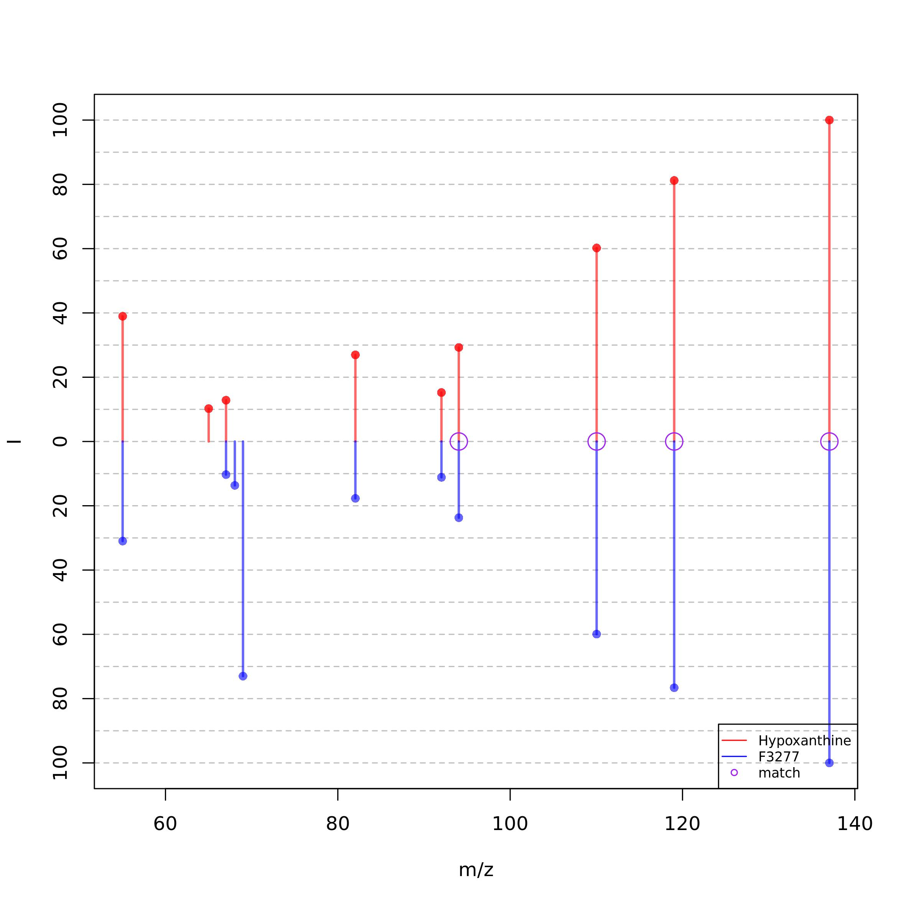
The function h_map_MSMS_comparison() draws heatmaps to
visually compare ppm errors and RI differences between feature and
metabolite spectra:
h_map_MSMS_comparison(mL_norm_bio, metab_id = "L1660", feature_id = "F10165")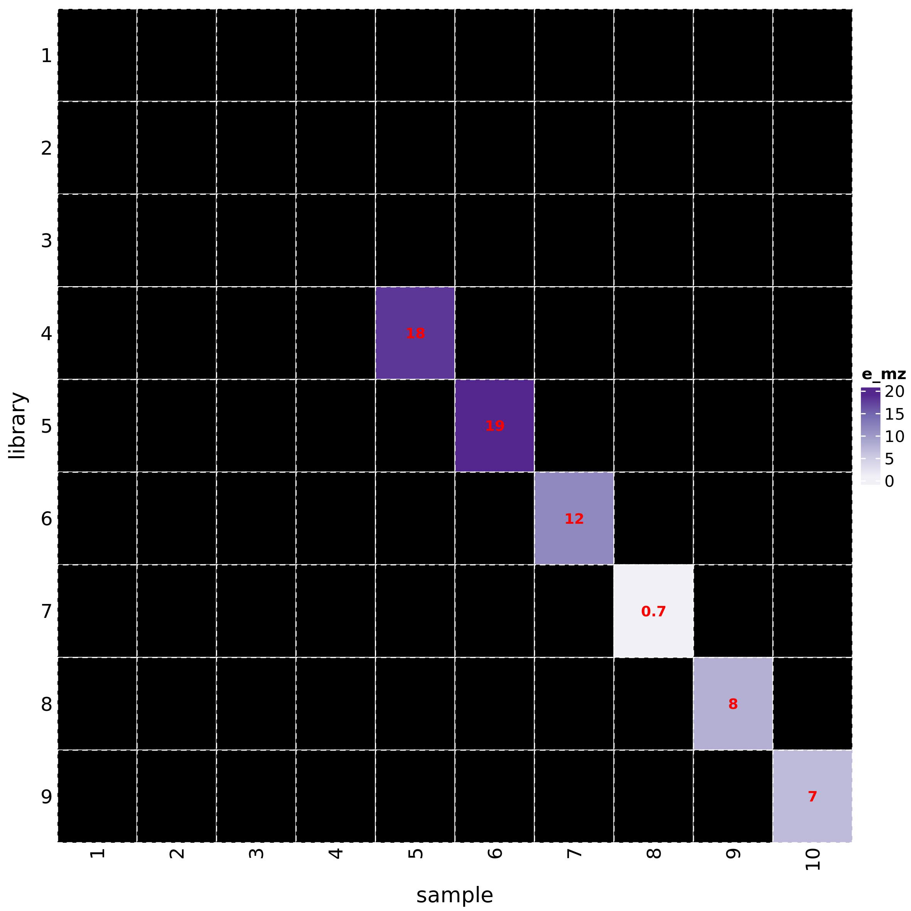
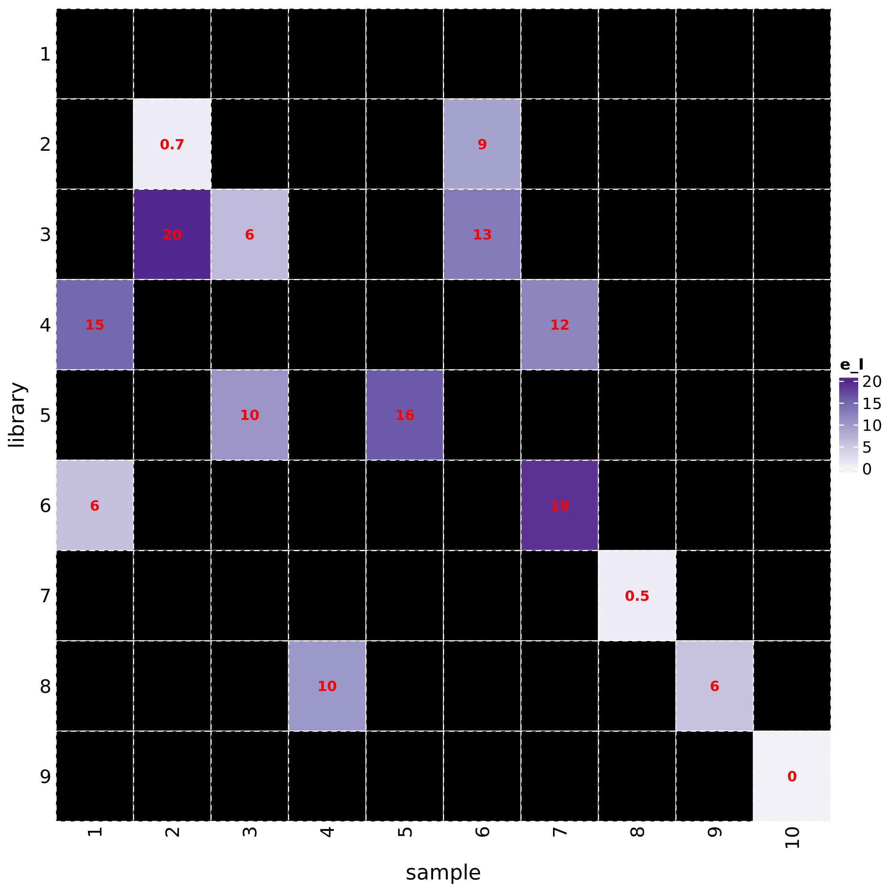
The function metab_boxplot() draws boxplots of feature
abundances grouped by the levels of a given factor:
metab_boxplot(mRList = mL_norm_bio, col_by="class", group="class", features = "F3957")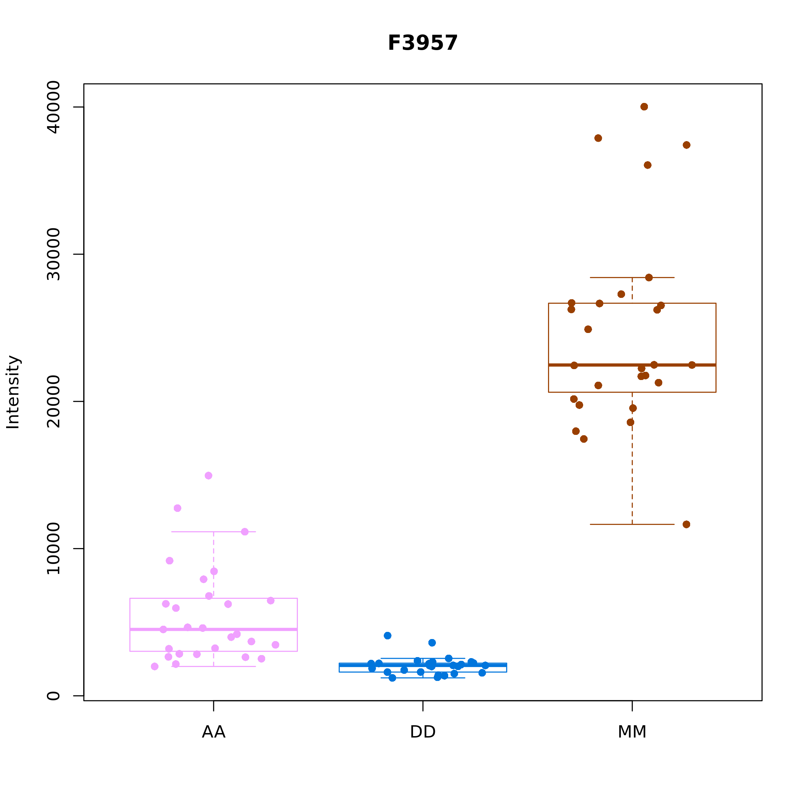
The function h_map() provides heatmaps based on package
ComplexHeatmap (Gu, Eils,
and Schlesner 2016). Here we show the abundance of the most
significant metabolites according to ANOVA test:
significant_features <- select_sign_features(mL_norm_bio, test_method="anova", test_value = "q", cutoff_value = 1e-9, feature_id = "Name")
h_map(mL_norm_bio, scale_features=TRUE, column_ann="class", data.use = "data_ann", col_ann= pals::trubetskoy(3), features = significant_features, top = Inf, use_top_annoteted_metab = TRUE, test_method="anova", test_value = "q", show_column_names=FALSE)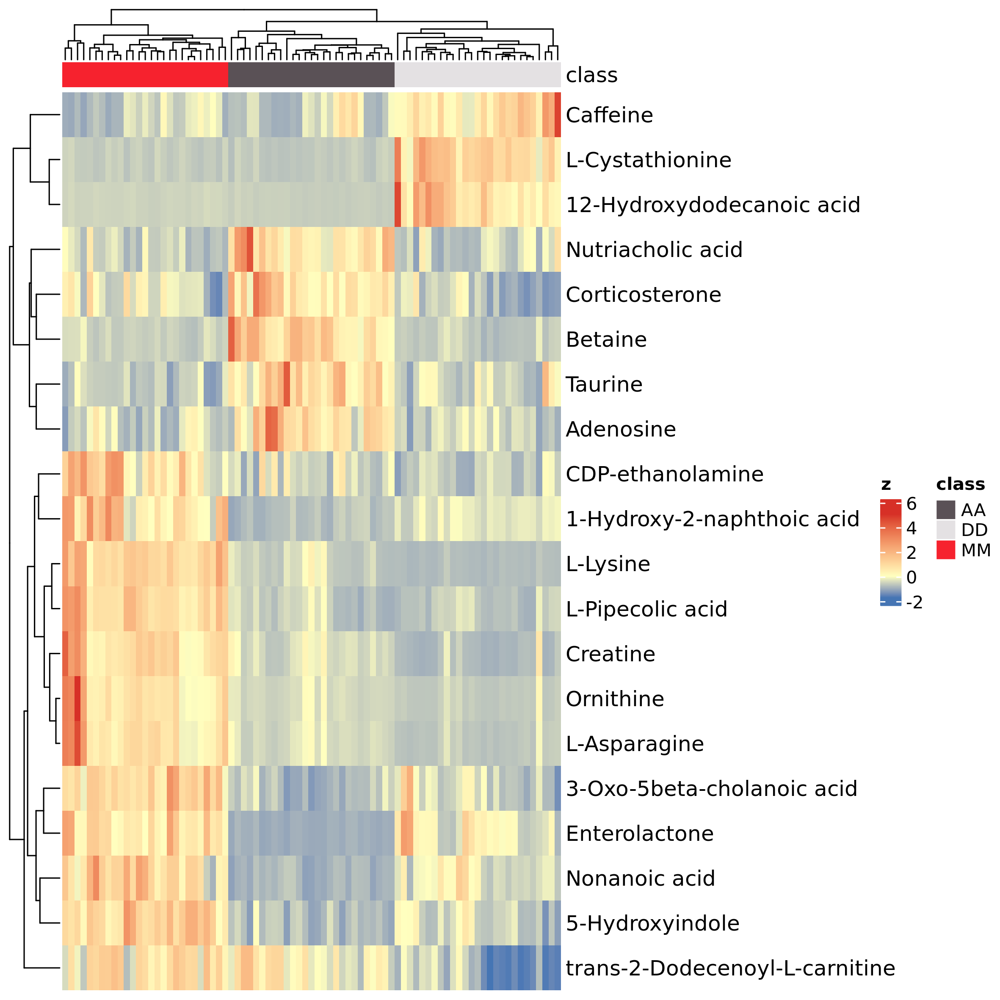
The function merge_stats_w_features() joins the results
of metabolite annotation and statistical analysis:
metab_stats <- merge_stats_w_features(mRList = mL_norm_bio, test_method = "anova", test_value = "q", cutoff_value = 0.05)It produces a list of data frames and an xlsx file creating with the following itmes/sheets:
metab_stat: full table with feature annotation and
statistical analysis results;
metab_stat_feat: same as metab_stat,
with the addition of feature intensities;
metab_stat_feat_known: same as
metab_stat_feat, but restricted to features with an
assigned compound;
metab_stat_feat_sig: same as
metab_stat_feat, but only for statistically significant
features;
metab_stat_feat_known_sig: same as
metab_stat_feat, but only for statistically significant
features with an assigned compound.
margheRita implements both Over Representation Analysis (ORA) and
Metabolite Set Enrichment Analysis (MSEA), based on clusterProfiler
(Wu et al. 2021)
over BioCyc, KEGG and Reactome pathway databases. These analyses can be
run by means of function pathway_analysis().
In case of ORA the minimum requirements are the vector of PubChemCID to be tested and the reference universe of all PubChemCIDs in the dataset. In the following example we extract the PubChemCID of the most significant features according to anova and consider all the PubChemCID found in the dataset as reference universe:
significant_features <- select_sign_features(mL_norm_bio, test_method="anova", test_value = "q", cutoff_value = 1e-9, feature_id = "PubChemCID", split_by_semicolon = T)
universe <- select_sign_features(mL_norm_bio, test_method="anova", test_value = "q", feature_id = "PubChemCID", split_by_semicolon = T)
pa_res <- pathway_analysis(in_list = significant_features, universe = universe, type = "ora")Note that we set the argument split_by_semicolon=TRUE
because the statistical analysis was conducted at feature level and we
can have a \((1,n)\) mapping between
features and metaboltes, which yields multiple semicolon-separated
PubChemCIDs for the same feature.
In case of MSEA, we obtain a ranked vector of scores
(values = TRUE) for all PubChemCIDs in the dataset, in
decreasing order of importance:
ranked_vector <- select_sign_features(mL_norm_bio, test_method="anova", test_value = "q", cutoff_value = Inf, feature_id = "PubChemCID", values = TRUE, split_by_semicolon = F)
ranked_vector <- sort(-log10(ranked_vector), decreasing = T)
msea_res <- pathway_analysis(in_list = ranked_vector, type = "msea")In both cases (ORA and MSEA), the result is a list that contains:
Here’s an example of resulting tables for ORA:
## ID Description GeneRatio BgRatio
## 1270158 1270158 Metabolism of amino acids and derivatives 7/14 17/65
## 132956 132956 Metabolic pathways 13/14 46/65
## 1269956 1269956 Metabolism 11/14 39/65
## 1270189 1270189 Biological oxidations 4/14 10/65
## 1269907 1269907 SLC-mediated transmembrane transport 4/14 11/65
## pvalue p.adjust qvalue
## 1270158 0.02911650 0.1425378 0.1125298
## 132956 0.03563444 0.1425378 0.1125298
## 1269956 0.09599568 0.2559885 0.2020962
## 1270189 0.13158841 0.2631768 0.2077712
## 1269907 0.17867096 0.2858735 0.2256896
## geneID
## 1270158 247/1123/439227/586/6262/439258/60961
## 132956 247/1123/439227/586/6267/6262/5962/6844/2519/439258/60961/5753/123727
## 1269956 247/1123/439227/586/6262/2519/79034/439258/60961/5753/123727
## 1270189 2519/79034/60961/5753
## 1269907 247/1123/6262/60961
## Count
## 1270158 7
## 132956 13
## 1269956 11
## 1270189 4
## 1269907 4Note that the column header mention “Genes” because it is inherited from clusterProfiler, which was developed for transcriptomics. At the moment, we did not change such terminology because that could affect the interoperability of the results.
Here’s the output in case of MSEA:
## ID Description setSize
## 132956 132956 Metabolic pathways 46
## 1270158 1270158 Metabolism of amino acids and derivatives 17
## 1269956 1269956 Metabolism 39
## 1269907 1269907 SLC-mediated transmembrane transport 11
## 1269903 1269903 Transmembrane transport of small molecules 12
## enrichmentScore NES pvalue p.adjust qvalues rank
## 132956 0.6501457 1.319464 0.01498501 0.09264854 0.07314358 30
## 1270158 0.7190881 1.378084 0.02316213 0.09264854 0.07314358 28
## 1269956 0.6127369 1.235491 0.06493506 0.17316017 0.13670540 28
## 1269907 0.6923795 1.281174 0.09276249 0.18552497 0.14646709 28
## 1269903 0.6643662 1.240177 0.13543788 0.21670061 0.17107943 28
## leading_edge
## 132956 tags=39%, list=25%, signal=48%
## 1270158 tags=53%, list=24%, signal=47%
## 1269956 tags=36%, list=24%, signal=41%
## 1269907 tags=45%, list=24%, signal=38%
## 1269903 tags=42%, list=24%, signal=35%
## core_enrichment
## 132956 5962/439258/439227/247/586/6844/6267/1123/6262/5753/123727/60961/2519/444539/936/6037/5816/126
## 1270158 439258/439227/247/586/1123/6262/60961/936/5816
## 1269956 439258/439227/247/586/79034/1123/6262/5753/123727/60961/2519/936/6037/5816
## 1269907 247/1123/6262/60961/5816
## 1269903 247/1123/6262/60961/5816A plot for the results of ORA can be generated using the following function:
barplot_ora(pa_res, p = "p.adjust", filename = "pathway_analysis_ora")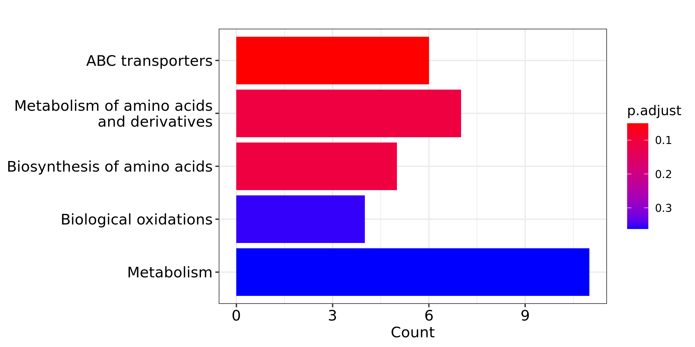
See the documentation of clusterProfiler for further information.